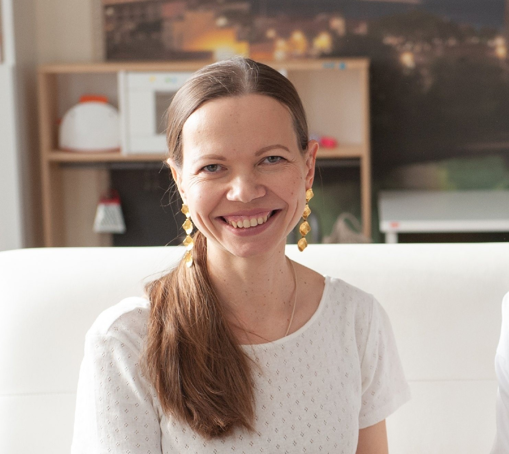
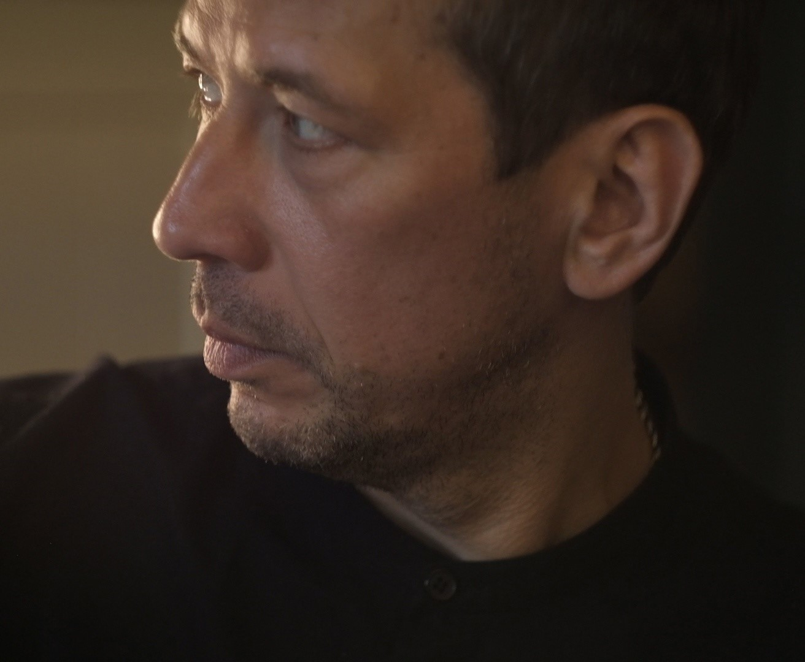
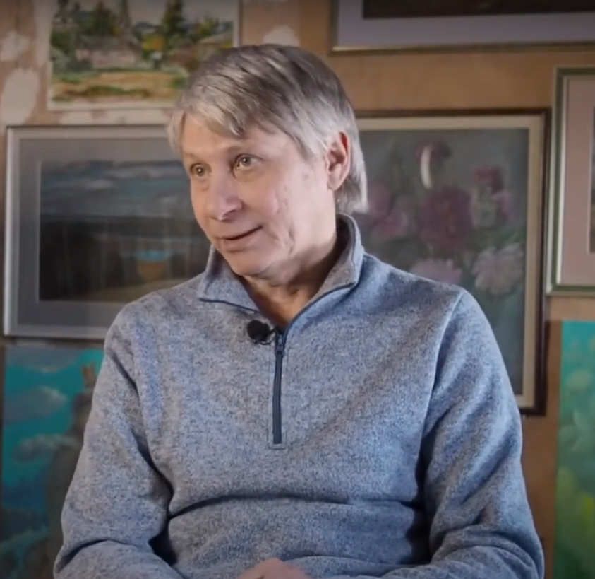
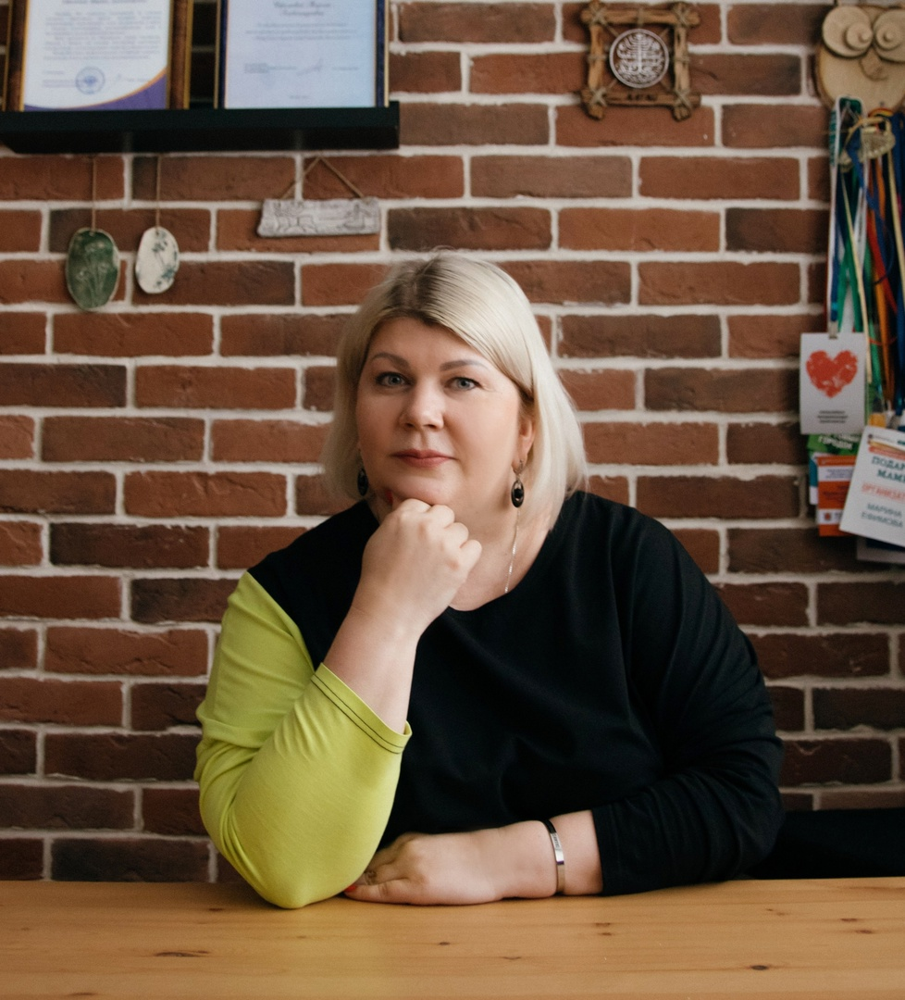
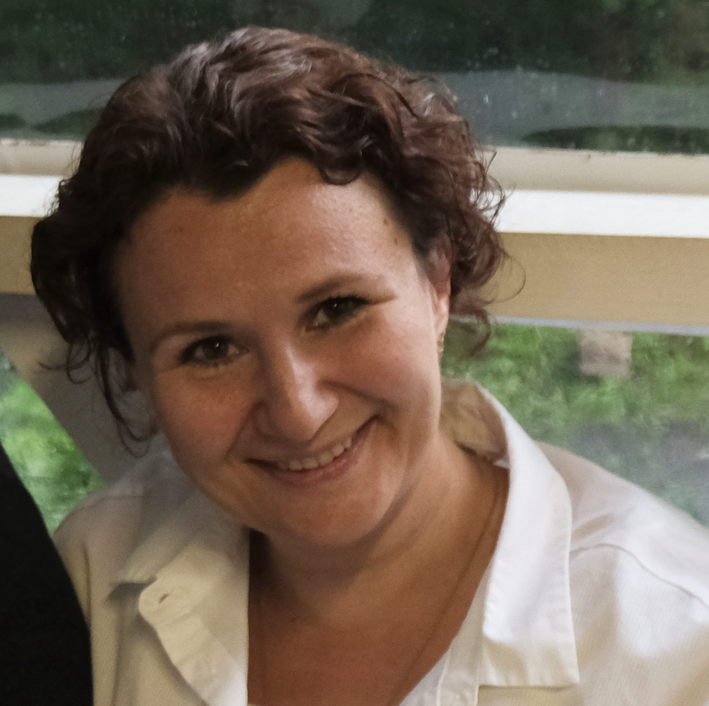

Мы создали комплекс услуг, с помощью которых можно сохранить семейные архивы и ценные воспоминания. Всю техническую работу мы берём на себя, оставляя Вам только положительные эмоции и готовый результат.

Наталья Губина
Многодетная мамаКак же ценны такие моменты и насколько отличается
профессиональная съёмка и обработка!
У меня собрано много материала о предках, но до
сих пор не подведён промежуточный
итог, чтобы это можно было передавать дальше.
А теперь у меня есть это видео! И я очень
надеюсь, что наши дети продолжат мои поиски и
будут знать свои корни.

Андрей Мерзликин
Актёр, режиссёрКатя, я посмотрел. Такой восторг!
Снято очень
хорошо! Круто!
Все красивые, естественные.
Я так
счастлив! Это мои родители! Я в глубоком
уважении к вашему труду!

Леонид Колосов
ХудожникМне часто приходится давать интервью для СМИ,
блогеров. Поэтому я могу сравнить и отметить
слаженную работу команды "Истории семьи",
подготовленность, умение создать
непринуждённую обстановку.
Съемки мне очень
понравились! Рекомендую!

Марина Ефимова
Основатель фонда «Жизнь без границ»Фильм получился пронзительным до слез.
30 минут о жизни целой эпохи. О родителях и раскулачивании,о войне и голоде,о повальной бедности и работе с 7 лет.
О своей любви,о детях,о внуках и правнуке.
Собирались всей семьёй и подругами его смотреть.
Бабуля осталась довольна!
Спасибо, Денис, за то,что вложил в мою голову идею этой съемки.
Спасибо за бережное и трепетное отношение к нашей бабушке.
За бесконечные уточнения и согласования по фильму.
И конечно за итог,который для нашей семьи больше,чем просто фильм.
Это память!

Надежда Кузьмина
Педагог, владелец частного детского сада.Катюша, я очень тебе благодарна за работу над книгой о жизни моей бабушки!
Ты большой профессионал
своего дела! Благодаря твоему вниманию к деталям, мы создали поистине бесценное издание. Собрали воедино
интервью с бабушкой, старые фотографии родственников и документы (медали, дипломы свидетельства о
рождении), дополнили современными фотографиями и тем самым воссоздали связь времен.
Книга получилась
не только аутентичной, но и невероятно красивой. Ни в какое сравнение не идет со старым фотоальбомом. Я в
восторге от результата!!!
Желаю процветания твоему проекту!!!